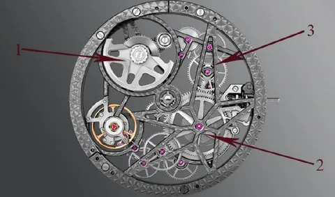

В работе и прочих свершениях нас мотивируют самые разные вещи - деньги, задачи, коллеги, челлендж сделать что-то почти невозможное, создать лучший продукт на рынке, разобраться в новой технологии, влиять на успехи компании - можно продолжать. Одна из задач руководителя - находить у каждого участника команды его индивидуальный мотивационный сетап и заряжать его соответствующим способом.
Это действительно важно, так как от мотивированности напрямую зависит перформанс команды, ее стабильность и отток, способность ставить амбициозные цели и достигать их. Задачка не из легких, поэтому для любого руководителя нет большего счастья, чем самомотивирующаяся команда. Кого-то нужно регулярно "подкармливать" факторами мотивации, а кто-то находит их сам, "подножным кормом". Я и сам из таких, и ценю это в людях.
Как же можно самомотивироваться? Приведу несколько вариантов:
• Умейте ценить свои успехи и подмечайте успехи коллег. Вы - молодец и капитальный красавчик, и никогда в этом не сомневайтесь.
• Интересуйтесь, зачем нужна задача или проект, какую пользу они принесут, как повлияют на бизнес. Вы ведь тоже влияете на успех компании.
• Ищите новые зоны роста своего продукта, предлагайте инновации. От вас тоже зависит вектор развития, вы должны быть услышаны.
• Фокусируйтесь на поиске решений, а не на мрачной констатации проблем. Ворчать все умеют, а решать проблемы куда продуктивней.
• Любите свое дело и смотрите с оптимизмом на пару шагов вперед. Без цели и плана можно погрязнуть в рутине и заскучать.
Закончу метафорой. Самомотивация - это как часы с автоподзаводом. Для зумеров поясню: раньше были такие механические часы, которые сами принимают завод от движения. Вы в них просто ходите, и от движений руки через систему маховика, шестеренок и пружины часы поддерживают завод. Если положить их на тумбочку и долго не носить - они встанут. Мораль: не лежите на тумбочке, будьте всегда в движении, самозаводитесь, и тогда у вас не сядет батарейка.
